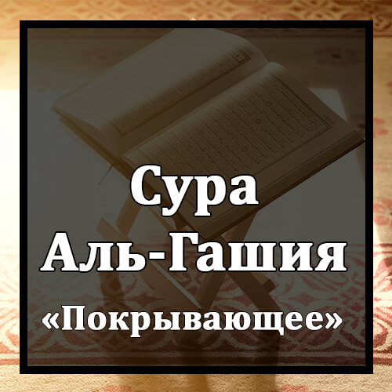

Бисмилляхир-Рахманир-Рахиим
Во имя Аллаха Милостивого и Милосердного!
Халь Атака Хадисуль-Гашийа.
Дошел ли до тебя рассказ о Покрывающем (Дне воскресения)?
Вуджухум Йаума`изин Хаши`а.
Одни лица в тот день будут унижены,
`Амилятун Насиба.
изнурены и утомлены.
Тасля Нараан Хамийа.
Они будут гореть в Огне жарком.
Туска Мин `Айнин Анийа.
Их будут поить из источника кипящего
Ляйса Ляхум Та`амун Илля Мин Дарии`.
и кормить только ядовитыми колючками,
Ля Йусмину Уа Ля Йугни Мин Джуу`.
от которых не поправляются и которые не утоляют голода.
Вуджухун Йаума`изин На`има.
Другие же лица в тот день будут радостны.
Лиса`йиха Радыйа.
Они будут довольны своими стараниями
Фи Джаннатин `Алийа.
в Вышних садах.
Ля Тасма`у Фиха Лягийа.
Они не услышат там словоблудия.
Фиха `Айнун Джарийа.
Там есть источник текущий.
Фиха Сурурун Марфу`а.
Там воздвигнуты ложа,
Уа Акуабун Мауду`а.
расставлены чаши,
Уа Намарику Масфуфа.
разложены подушки,
Уа Зарабийу Мабсуса.
и разостланы ковры.
Афаля Йанзуруна Иляль-Ибили Кайфа Хуликат.
Неужели они не видят, как созданы верблюды,
Уа Иляс-Сама`и Кайфа Руфи`ат.
как вознесено небо,
Уа Иляль-Джибали Кайфа Нусибат.
как водружены горы,
Уа Иляль-Арды Кайфа Сутихат.
как распростерта земля?
Фазаккир Иннама Анта Музаккир.
Наставляй же, ведь ты являешься наставником,
Ляста `Алейхим Бимусайтыр.
и ты не властен над ними.
Илля Ман Тауалля Уа Кафар.
А тех, кто отвернется и не уверует,
Файу`аззибухуЛлахуль-`Азабаль-Акбар.
Аллах подвергнет величайшим мучениям.
Инна Иляйна Ийабахум.
К Нам они вернутся,
Сумма Инна `Алейна Хисабахум.
и затем Мы потребуем у них отчета.